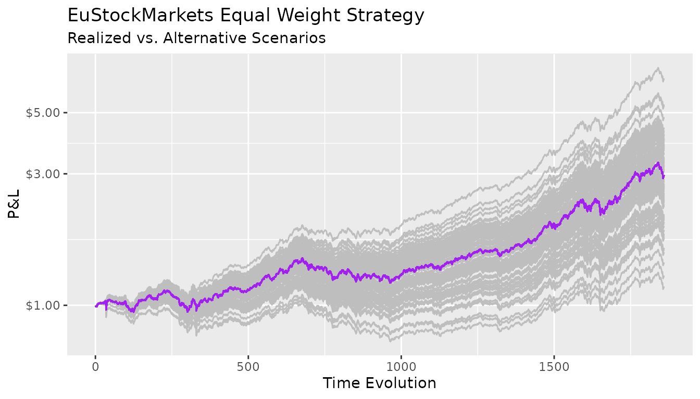

what_if_analysis.RmdThis brief introduction shows how use CMA to price alternative scenarios for an investment strategy. The recipe goes as follows:
Detach the copulas from the margins;
Pick one element to play with;
Generate new scenarios;
Merge the newly generated scenarios with the empirical copulas.
For this vignette, the EuStockMarket dataset is used as proxy for the “Market”.
The setup goes as follows:
# load packages
library(cma) # core package
library(dplyr) # data manipulation
library(tidyr) # data manipulation
library(purrr) # vetorized loops
library(ggplot2) # plotting
# compute log returns (stationarity)
x <- matrix(diff(log(EuStockMarkets)), ncol = 4)
n_row <- nrow(x)
head(x)
#> [,1] [,2] [,3] [,4]
#> [1,] -0.009326550 0.006178360 -0.012658756 0.006770286
#> [2,] -0.004422175 -0.005880448 -0.018740638 -0.004889587
#> [3,] 0.009003794 0.003271184 -0.005779182 0.009027020
#> [4,] -0.001778217 0.001483372 0.008743353 0.005771847
#> [5,] -0.004676712 -0.008933417 -0.005120160 -0.007230164
#> [6,] 0.012427042 0.006737244 0.011714353 0.008517217The first step evolves separating the margins from the copulas with cma_separation().
# First CMA Step
step_one <- cma_separation(x)
step_one
#> # CMA Decomposition
#> marginal: << tbl 1859 x 4 >>
#> cdf : << tbl 1859 x 4 >>
#> copula : << tbl 1859 x 4 >>The output is a list with three components: the margins, the CDF, and the copula.
In this vignette, the margins are manipulated while keeping the copula structure unchanged.
Once the the “separation” is done it’s necessary to choose a target distribution for the data. For simplicity, let’s fit a Student-t, but it could be any distribution (see “Marginal Distributions” on the reference page).
dist_t <- fit_t(step_one$marginal)
dist_t
#> # Margins Estimation
#> Converged: TRUE
#> Dimension: 4
#> AIC: -52711.16
#> Log-Likelihood: 26374.58
#> Model: Asymmetric Student-tThe next step requires some tidyverse skills.
Start building a list-column for the new scenarios wit generate_margins():
simul_tbl <- tibble::tibble(simulations = 1:100) |>
dplyr::mutate(new_scenarios = purrr::map(
.x = rep(n_row, 100),
.f = ~ generate_margins(model = dist_t, n = .x)
)
) |>
tidyr::unnest(cols = new_scenarios)
simul_tbl
#> # A tibble: 100 × 2
#> simulations new_scenarios
#> <int> <list<dbl>>
#> 1 1 [1,859 × 4]
#> 2 2 [1,859 × 4]
#> 3 3 [1,859 × 4]
#> 4 4 [1,859 × 4]
#> 5 5 [1,859 × 4]
#> 6 6 [1,859 × 4]
#> 7 7 [1,859 × 4]
#> 8 8 [1,859 × 4]
#> 9 9 [1,859 × 4]
#> 10 10 [1,859 × 4]
#> # … with 90 more rowsThe simul_tbl is a tidy (long-format) tibble with 100 marginal distributions that are consistent with the dist_t object fitted in step 2 (every row in new_scenarios holds a different simulation).
To complete the scenario generation process it’s important to “glue” the simulations back into the empirical copula that is stored in step_one.
step_two <- simul_tbl |>
dplyr::mutate(cma_comb = purrr::map(
.x = new_scenarios,
.f = ~ cma_combination(
x = .x,
cdf = step_one$cdf,
copula = step_one$copula)
)
)
step_two
#> # A tibble: 100 × 3
#> simulations new_scenarios cma_comb
#> <int> <list<dbl>> <named list>
#> 1 1 [1,859 × 4] <tibble [1,859 × 4]>
#> 2 2 [1,859 × 4] <tibble [1,859 × 4]>
#> 3 3 [1,859 × 4] <tibble [1,859 × 4]>
#> 4 4 [1,859 × 4] <tibble [1,859 × 4]>
#> 5 5 [1,859 × 4] <tibble [1,859 × 4]>
#> 6 6 [1,859 × 4] <tibble [1,859 × 4]>
#> 7 7 [1,859 × 4] <tibble [1,859 × 4]>
#> 8 8 [1,859 × 4] <tibble [1,859 × 4]>
#> 9 9 [1,859 × 4] <tibble [1,859 × 4]>
#> 10 10 [1,859 × 4] <tibble [1,859 × 4]>
#> # … with 90 more rowsThe cma_comb column now holds 100 simulations that, although being different, share a bond to each other because the structure of their copula is the same.
Finally, it’s possible to compute the performance of those realizations over an equal-weight strategy, for example (it could be any strategy).
step_two <- step_two |>
dplyr::mutate(weights = list(rep(0.25, 4)),
pnl = purrr::map2(.x = cma_comb,
.y = weights,
.f = ~ as.matrix(.x) %*% .y)) |>
dplyr::select(-c(cma_comb, weights))
step_two
#> # A tibble: 100 × 3
#> simulations new_scenarios pnl
#> <int> <list<dbl>> <named list>
#> 1 1 [1,859 × 4] <dbl [1,859 × 1]>
#> 2 2 [1,859 × 4] <dbl [1,859 × 1]>
#> 3 3 [1,859 × 4] <dbl [1,859 × 1]>
#> 4 4 [1,859 × 4] <dbl [1,859 × 1]>
#> 5 5 [1,859 × 4] <dbl [1,859 × 1]>
#> 6 6 [1,859 × 4] <dbl [1,859 × 1]>
#> 7 7 [1,859 × 4] <dbl [1,859 × 1]>
#> 8 8 [1,859 × 4] <dbl [1,859 × 1]>
#> 9 9 [1,859 × 4] <dbl [1,859 × 1]>
#> 10 10 [1,859 × 4] <dbl [1,859 × 1]>
#> # … with 90 more rowsTranslate compounded returns to prices and plot:
step_two |>
# price
dplyr::mutate(pnl_prices = purrr::map(.x = pnl, .f = ~ cumprod(exp(.x))),
pnl_ref = list(cumprod(exp(x %*% rep(0.25, 4))))) |>
tidyr::unnest(cols = c(pnl_prices, pnl_ref)) |>
# build an index
dplyr::group_by(simulations) |>
dplyr::mutate(rowid = 1:n_row) |>
dplyr::ungroup() |>
# plot
ggplot2::ggplot(ggplot2::aes(x = rowid, y = pnl_prices, group = simulations)) +
ggplot2::geom_line(col = "grey") +
ggplot2::geom_line(ggplot2::aes(y = pnl_ref), color = "purple") +
ggplot2::scale_y_log10(labels = scales::dollar_format()) +
ggplot2::labs(title = "EuStockMarkets Equal Weight Strategy",
subtitle = "Realized vs. Alternative Scenarios",
x = "Time Evolution",
y = "P&L")
All the paths generated above are compatible with the same marginal distribution specification. The difference between the “good” portfolios and the “bad” ones is purely due by chance. Indeed, differentiating between skill and luck is notoriously difficult.